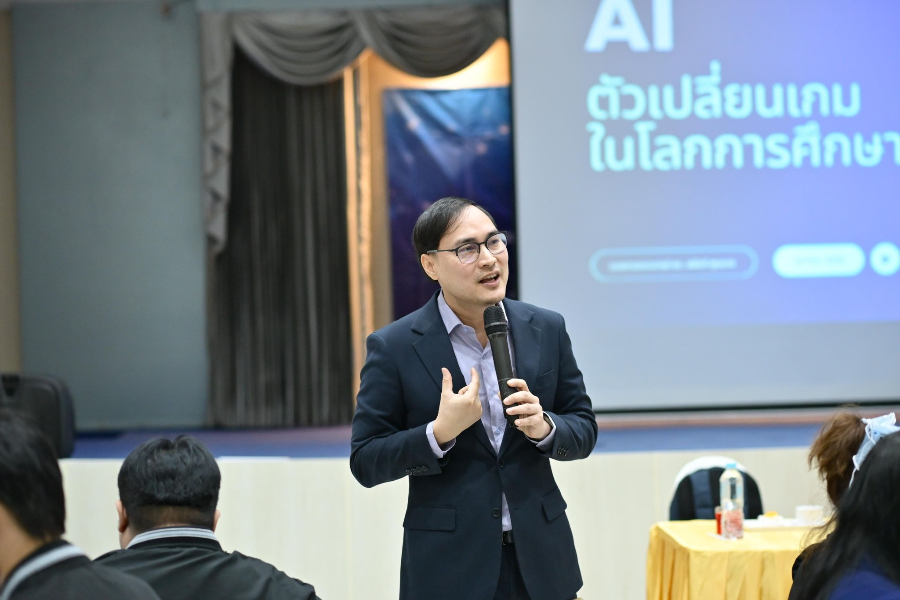
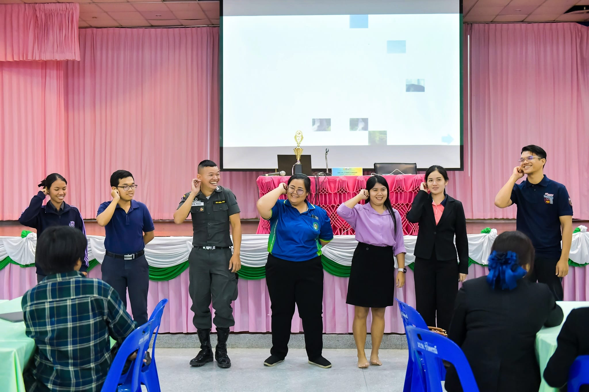
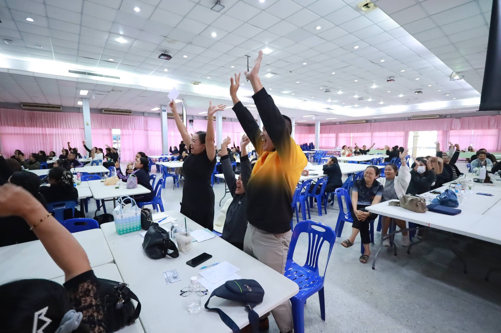
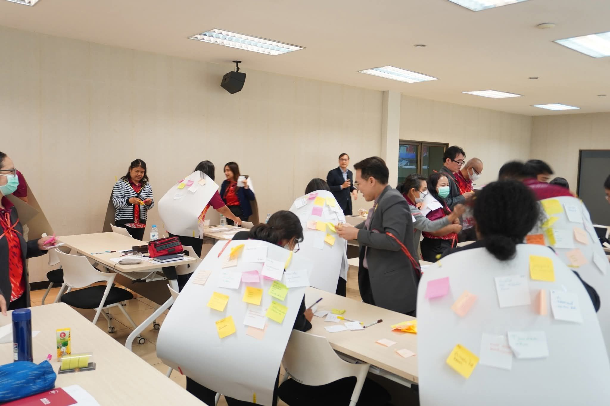
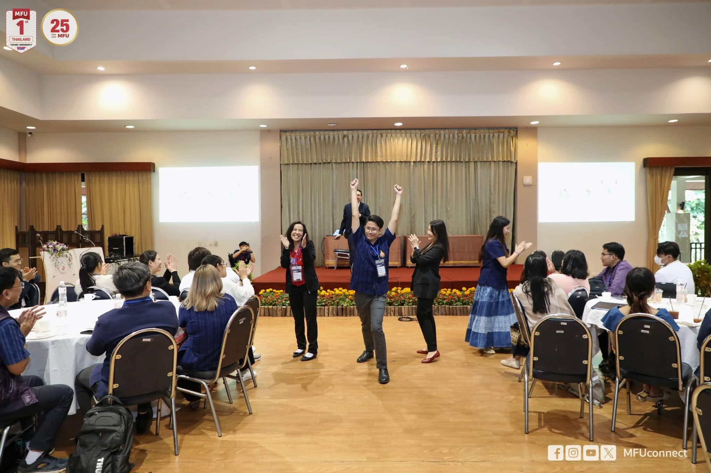

Active Learning
การจัดกิจกรรมการเรียนรู้เชิงรุกทั้งในชั้นเรียนปกติและออนไลน์
รองศาสตราจารย์ ดร.
ผู้อำนวยการ สำนักนวัตกรรมการเรียนรู้
มหาวิทยาลัยศรีนครินทรวิโรฒ
นักวิชาการด้านนวัตกรรมการเรียนรู้ เทคโนโลยีการศึกษา และการพัฒนา การสอนระดับอุดมศึกษา ผู้ขับเคลื่อน Active Learning, AI for Teaching, Gamification และการเรียนรู้ออนไลน์ให้เกิดผลจริงในห้องเรียนไทย

เกี่ยวกับ
ปัจจุบันดำรงตำแหน่งผู้อำนวยการ สำนักนวัตกรรมการเรียนรู้ มหาวิทยาลัยศรีนครินทรวิโรฒ สำเร็จการศึกษาระดับปริญญาเอก ปรัชญาดุษฎีบัณฑิต สาขานวัตกรรมการเรียนรู้และเทคโนโลยี มหาวิทยาลัยเทคโนโลยีพระจอมเกล้าธนบุรี โดยได้รับทุนเพชรพระจอมระหว่างการศึกษา
ได้รับการรับรองมาตรฐานการสอนระดับ Senior Fellow จาก The Higher Education Academy (UK Professional Standard Framework) และมีผลงานต่อเนื่องด้าน Active Learning การสอนออนไลน์ การสร้างนวัตกรรมการเรียนรู้ และการใช้เทคโนโลยี เพื่อยกระดับประสบการณ์ผู้เรียน
ความเชี่ยวชาญ
การจัดกิจกรรมการเรียนรู้เชิงรุกทั้งในชั้นเรียนปกติและออนไลน์
การใช้เทคโนโลยี AI เพื่อเพิ่มประสิทธิภาพการสอนและออกแบบกิจกรรม
การเปลี่ยนห้องเรียนเป็นประสบการณ์การเรียนรู้แบบเกม
การออกแบบการเรียนรู้ออนไลน์ ระบบ LMS และการสอนแบบผสมผสาน
การออกแบบการสอน การประเมิน และการพัฒนาวิชาชีพอาจารย์
เส้นทางการทำงาน
ประสบการณ์ครอบคลุมงานสอน การพัฒนาโปรแกรม การออกแบบระบบสารสนเทศ การบริหารหน่วยงาน และการพัฒนามาตรฐานการสอนระดับอุดมศึกษา
คณะวิทยาศาสตร์ มหาวิทยาลัยสยาม
มหาวิทยาลัยศรีนครินทรวิโรฒ
สาขาเทคโนโลยีการศึกษา
The Higher Education Academy, UKPSF
สำนักนวัตกรรมการเรียนรู้ มหาวิทยาลัยศรีนครินทรวิโรฒ
ผ่านการอบรมหลักสูตรสำหรับผู้นำระดับมหาวิทยาลัย
รางวัลและเกียรติยศ
ได้รับรางวัลด้านการสอน การออกแบบกิจกรรมการเรียนรู้เชิงรุก และการพัฒนานวัตกรรมการเรียนการสอนจากหน่วยงานวิชาการระดับประเทศ
สำนักนวัตกรรมการเรียนรู้ มหาวิทยาลัยศรีนครินทรวิโรฒ
สมาคมเครือข่ายการพัฒนาวิชาชีพอาจารย์และองค์กรระดับอุดมศึกษาแห่งประเทศไทย
สำหรับอุดมศึกษาในยุคพลิกผัน
การออกแบบกิจกรรมการเรียนรู้เชิงรุกในชั้นเรียน
วิทยากรอบรม
งานวิทยากรครอบคลุม AI เพื่อการสอน Active Learning Gamification Professional Standards และการพัฒนาครูในยุคดิจิทัล



มหาวิทยาลัยแม่ฟ้าหลวง
สำนักงานเขตพื้นที่การศึกษา จังหวัดนครปฐม
โรงเรียนพยาบาลรามาธิบดี
ราชวิทยาลัยจุฬาภรณ์
คณะศึกษาศาสตร์ มหาวิทยาลัยศิลปากร
สถาบันเทคโนโลยีพระจอมเกล้าเจ้าคุณทหารลาดกระบัง
ผลงานวิจัยและตีพิมพ์
ผลงานตีพิมพ์ทั้งในประเทศและต่างประเทศครอบคลุม Active Learning Gamification แรงจูงใจในการเรียนรู้ สภาพแวดล้อมการเรียนรู้ และการประเมินผู้เรียน

Poondej, C., Lawthong, N., Suwathanpornkul, I., Lerdpornkulrat, L., & Phansuwan, P. The Development of Active Learning in Online Teaching Platforms for Higher Education.
Lawthong, N., Thepsathit, P., Poondej, C., Lerdpornkulrat, T., & Suwathanpornkul, I. Online Student-Centered Learning and Assessment During the COVID-19 Pandemic.
Senko, C., Liem, G. A. D., Lerdpornkulrat, T., & Poondej, C. Why do students strive to outperform classmates?
Poondej, C., & Lerdpornkulrat, T. A Study of Gamification Concept of Innovative Learning.
Poondej, C., & Lerdpornkulrat, T. Gamification in e-learning: A Moodle implementation and its effect on student engagement and performance.
ติดต่อ
สำนักนวัตกรรมการเรียนรู้ มหาวิทยาลัยศรีนครินทรวิโรฒ